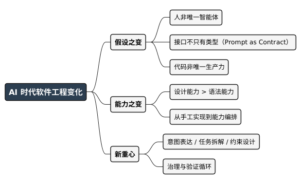

AI 时代的软件工程正在发生什么？
Posted on 三 11 2月 2026 in AI
| Abstract | AI 时代的软件工程正在发生什么？ |
|---|---|
| Authors | Walter Fan |
| Category | learning note |
| Version | v1.0 |
| Updated | 2026-02-12 |
| License | CC-BY-NC-ND 4.0 |
AI 时代的软件工程正在发生什么？
上周 code review，有一半 patch 的 diff 里带着 "AI 生成" 的痕迹。不是坏事——交付快了。但你会隐隐觉得：我们还在用同一套 "人写代码、人审代码" 的流程，去应对已经不太一样的生产方式。
过去三十年，软件工程的核心能力其实没怎么变：
把需求转化为代码。
语言、框架、架构、设计原则，绕来绕去都是为了把系统写稳、写对、写可维护。
AI 大模型出现之后，这个基本假设开始松动。
问题不在于 "AI 会不会写代码" ——会，而且会得越来越多。
真正的问题是：当机器可以参与编写、理解、重构、甚至设计代码时，软件工程的核心能力，还等不等于 "亲手实现" ？
这一章要回答的就是：AI 时代，软件工程究竟在发生什么变化？
1. Copilot 只是开始
很多团队对 AI 的理解停留在 Copilot 阶段：
- 自动补全代码
- 生成单元测试
- 写注释
- 重构建议
这是一种“增强型 IDE”。
它提高效率，但并没有改变软件工程的结构。
在这个阶段：
- 人类仍然是唯一决策者
- AI 只是生成器
- 系统结构完全由人类主导
- 代码的确定性假设不变
如果 AI 只停留在这个阶段，那么它只是一次生产力工具升级，类似于从 Vim 到 IntelliJ 的演进。
但现实正在向前推进。
当模型具备以下能力：
- 多轮推理
- 工具调用
- 记忆保持
- 自我反思
- 任务拆解
它就不再是“补全工具”，而是一个参与系统行为的智能体。
这时，工程假设开始改变。
2. Prompt 是新接口
传统软件的接口是什么？
- HTTP API
- gRPC
- CLI
- 函数签名
接口的特点是：
- 明确输入输出
- 类型可校验
- 行为可预测
- 可测试、可回归
而在 AI 系统中，一个新的接口出现了：
Prompt。
Prompt 不再只是文本。
它实际上承担了以下职责：
- 指令定义
- 行为约束
- 输出格式规范
- 推理路径引导
- 风险控制边界
它本质上是一个“语义接口”。
当团队开始版本化 Prompt、回归测试 Prompt、审查 Prompt 时，事情已经发生变化。有的团队给 "总结会议纪要" 的 prompt 做回归，发现把 "简明" 改成 "详尽" 一个词，输出风格就全偏了——契约已经不在类型里，而在语义里。
我们正在从：
Code as Contract
转向：
Prompt as Contract
这意味着：
- 行为定义从类型系统迁移到语义系统
- 验证从编译期迁移到运行期评估
- 接口从确定性协议转向概率性约束
这不是工具变化，这是接口模型变化。
3. Code 不再是唯一生产力
在传统工程中，生产力主要体现在：
- 写得快
- 写得稳
- 写得优雅
- 架构设计合理
而 AI 引入后，新的生产力维度出现：
- 意图表达能力
- 任务拆解能力
- 工具编排能力
- 结果验证能力
- 约束设计能力
当一个工程师可以用 20 行自然语言生成 200 行结构化代码时，生产力的瓶颈不再是“打字速度”。
而是：
- 你能否准确表达意图？
- 你是否知道系统边界？
- 你是否能识别风险？
- 你是否能设计验证机制？
代码的“生成”成本大幅下降。
但代码的“正确性保障”成本并没有下降。
甚至在某些情况下更高。
因此，软件工程的价值正在发生重心转移：
从实现，转向治理。
4. 设计能力 > 语法能力
在传统工程体系中，技术成长路径通常是：
语法熟练
→ 框架掌握
→ 架构理解
→ 系统设计
而在 AI 时代，前两个阶段的壁垒迅速降低。
AI 可以：
- 写 CRUD
- 生成 REST API
- 编写基础单元测试
- 甚至生成简单架构模板
这导致一个直接后果：
语法能力的稀缺性下降。
真正稀缺的能力开始转向：
- 系统抽象能力
- 边界定义能力
- 约束设计能力
- 行为建模能力
- 风险评估能力
如果说过去的工程能力核心是：
How to implement?
那么现在的核心问题变成：
What should be implemented, and under what constraints?
这是一种认知层级的上移。
5. 从“手工实现”到“能力编排”
我们终于来到本章的核心论点。
在传统工程中，工程师的核心工作是：
- 亲自实现每一个函数
- 手动控制系统行为
- 精确控制每一个分支
系统的“能力”是通过代码逐行堆叠起来的。
而在 AI 时代，一个新的可能性出现：
我们不再直接实现所有能力。
我们开始：
- 设计能力接口
- 编排能力调用
- 定义行为约束
- 建立验证循环
- 监控智能体行为
软件开发正在从：
手工实现（Manual Implementation）
转向：
能力编排（Capability Orchestration）
这不是对工程的削弱，而是抽象层级的提升。
就像当年从汇编走向高级语言，从单体走向微服务，从物理机走向云计算。打个比方：工程师从 "砌砖" 变成 "画图纸 + 验收" ——砖可以交给机器或外包砌，但图纸和验收标准你得握在手里。
每一次跃迁，本质上都是：
工程师从更高层级控制系统。
现在，AI 正在成为新的能力模块。
工程师的角色正在转变为：
- 能力设计者
- 行为约束设计者
- 智能体调度者
- 系统治理者
这将是本书后续所有章节的基础。
6. 本章小结
AI 并没有消灭软件工程，但它改变了三个关键假设：人不再是唯一智能体；接口不再只有类型系统；代码不再是唯一生产力载体。
软件工程正在进入一个新阶段：Prompt 是接口，Agent 是执行单元，可观测性是安全边界，治理能力比实现能力更关键。核心任务正在从 "写代码" 转向构建可控的智能能力系统。
@startmindmap
<style>
mindmapDiagram {
node { BackgroundColor #F5F5F5; RoundCorner 8; Padding 8; FontSize 14 }
:depth(0) { BackgroundColor #2C3E50; FontColor white; FontSize 16; FontStyle bold }
:depth(1) { FontSize 14; FontStyle bold }
:depth(2) { FontSize 13 }
}
</style>
* AI 时代软件工程变化
** 假设之变
*** 人非唯一智能体
*** 接口不只有类型（Prompt as Contract）
*** 代码非唯一生产力
** 能力之变
*** 设计能力 > 语法能力
*** 从手工实现到能力编排
** 新重心
*** 意图表达 / 任务拆解 / 约束设计
*** 治理与验证循环
@endmindmap

明天就能做的 4 件事
- 梳理你团队里哪些 "行为" 已经由 prompt 定义（15 分钟）
-
怎么算做得好：能列出一份清单，并标出哪些有版本、哪些有回归或人工抽查。
-
给至少一个关键 prompt 做版本化 + 简单回归（30 分钟）
-
怎么算做得好：改一词或一句能触发一次回归，并能看到行为差异。
-
选一处小流程试点 "能力编排" （例如：用 Agent 做会议纪要初稿 + 人审）
-
怎么算做得好：有明确输入/输出边界和验收标准，且可观测（谁改过、何时跑过）。
-
和团队对齐：我们当下的 "契约" 主要还在代码里，还是已经开始迁到 prompt？
- 怎么算做得好：能说清当前阶段和下一步打算，而不是各说各话。
适用边界与代价
适合把本文当 "新常态" 看的：已经在用 Copilot/Agent、对外或对内的 "行为" 越来越多由 prompt 驱动的团队。
暂时不必对号入座的：仍以纯手写代码为主、AI 只当偶尔助手的项目——但提前知道趋势没坏处。
代价与权衡：能力编排和治理会带来新成本（prompt 工程、回归、可观测性）；不投入，就容易被 "改一个词就崩" 或智能体越界打脸。
最后一个问题留给你：你们团队里， "契约" 还在代码里，还是已经开始迁到 prompt？你打算先从哪里动手——版本化 prompt，还是先定义一处 "能力编排" 的边界？
本作品采用知识共享署名-非商业性使用-禁止演绎 4.0 国际许可协议进行许可。